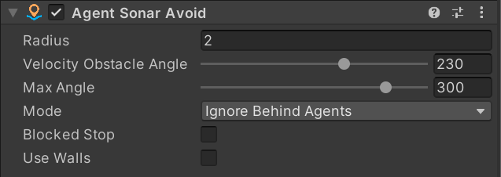

Agent Sonar Avoid
This component enables avoidance between nearby agents using the Sonar Avoidance solution. It implements the Local Avoidance package.
This behavior has many similarities with RVO (Reciprocal Velocity Obstacles) and ORCA (Optimal Reciprocal Collision Avoidance) algorithms and solves similar problems. The main difference with Sonar Avoidance is that it is more focused on the quality of a particular agent as opposed to the quality of the whole group. For this reason, it exhibits behaviors like circling around the target, which is highly sought after in games.
Debugging
When selecting the agent component, you can see gizmos that will help you debug and understand what is happening. The green volume will indicate the agent's non-obstructed area where it can go.
Note
To make it work with Entities, you will need to add the DrawGizmos component to the agent entity and select any Agent component.
Frequently asked questions
Why is my agent circling the target forever?
If the destination is unreachable, it is quite possible for the agent to get into a state where it would start circling back and forth. To solve this issue, it is recommended to implement a termination state. For example, if the agent does not make progress towards the target for some time, then it should stop and report failure. Also, playing around with the Radius and Angle fields, and reducing them, should reduce the circling behavior.
I want my agent to follow/attack another agent, but it starts to go around it?
This happens because the destination you set is inside the agent. As it fails to reach the destination, it starts to circle around the target. To solve this, there is a simple solution to offset the destination by some distance in front of the target. This will make the agent go towards the target and stop in front of it.
Sometimes agents still overlap?
The avoidance algorithm is based on velocity, but it does not account for acceleration. In some rare cases, it is possible for agents to overlap. Also, if you have Blocked Stop disabled, in the case of being fully blocked, it would fallback to regular direction disregarding avoidance. To solve this, you can use the Agent Collider component to enable collision between agents.
With the Nav Mesh component added, my agent moon-walks into the wall?
By default, Sonar has no understanding of nav mesh obstacles, so the algorithm gives direction without accounting for them. There is a new feature called Use Walls that will insert nav mesh edges into Sonar Avoidance as obstacles.